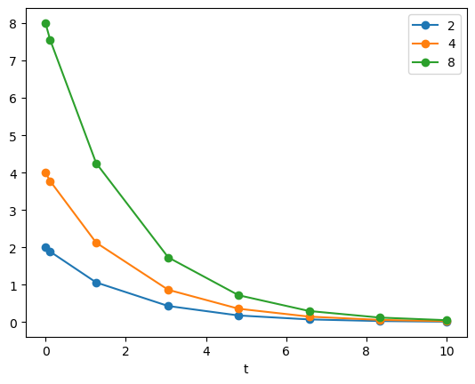
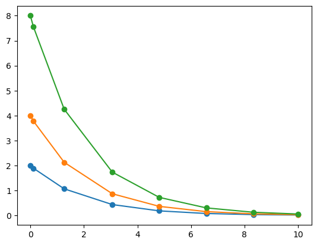
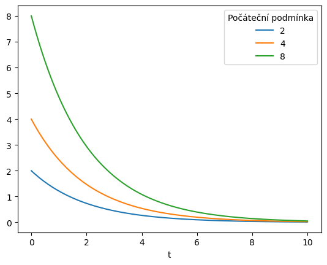
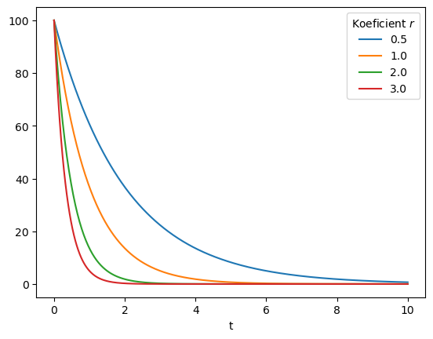
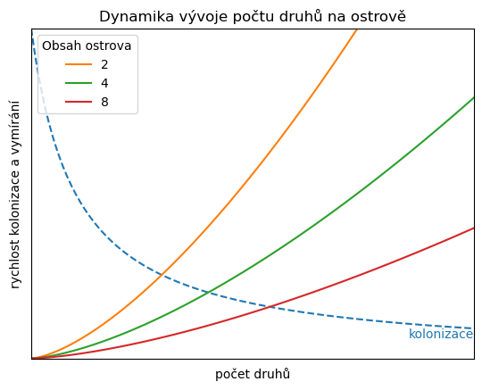
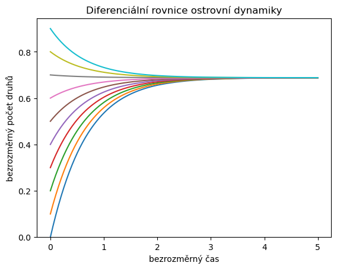
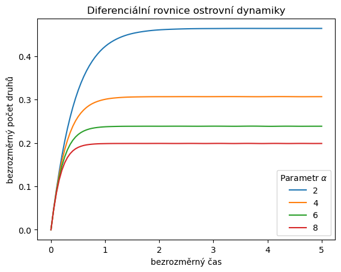

Diferenciální rovnice 1
Contents
3. Diferenciální rovnice 1#
import matplotlib.pyplot as plt
import pandas as pd
import numpy as np
from scipy.integrate import solve_ivp
3.1. Řešení diferenciální rovnice#
Příkaz solve_ivp dokáže vyřešit zadanou diferenciální rovnici pro několik počátečních podmínek. Použití je možné vidět na následujícím příkladě. Pro tři počáteční podmínky \(y(0)=2\), \(y(0)=4\) a \(y(0)=8\) řešíme rovnici
pocatecni_podminky = [2, 4, 8]
meze = [0,10]
def rovnice(t, y):
return -0.5 * y
sol = solve_ivp(rovnice, meze, pocatecni_podminky)
sol
message: 'The solver successfully reached the end of the integration interval.'
nfev: 44
njev: 0
nlu: 0
sol: None
status: 0
success: True
t: array([ 0. , 0.11487653, 1.26364188, 3.06061781, 4.81611105,
6.57445806, 8.33328988, 10. ])
t_events: None
y: array([[2. , 1.88836035, 1.06327177, 0.43319312, 0.18017253,
0.07483045, 0.03107158, 0.01350781],
[4. , 3.7767207 , 2.12654355, 0.86638624, 0.36034507,
0.14966091, 0.06214316, 0.02701561],
[8. , 7.5534414 , 4.25308709, 1.73277247, 0.72069014,
0.29932181, 0.12428631, 0.05403123]])
y_events: None
Následující příkazy vytisknou časy ve kterých bylo vypočteno řešení a hodnotu každého z řešení v daném čase.
print(sol.t)
print(sol.y)
[ 0. 0.11487653 1.26364188 3.06061781 4.81611105 6.57445806
8.33328988 10. ]
[[2. 1.88836035 1.06327177 0.43319312 0.18017253 0.07483045
0.03107158 0.01350781]
[4. 3.7767207 2.12654355 0.86638624 0.36034507 0.14966091
0.06214316 0.02701561]
[8. 7.5534414 4.25308709 1.73277247 0.72069014 0.29932181
0.12428631 0.05403123]]
Pro pohodnější práci je možné data zadat do tabulky, kde v prvním sloupci bude čas a v dalších sloupcích budou vypočtená řešení. Název sloupce bude dán počáteční podmínkou. Je vidět, že tímto číslem každé řešení i začíná.
df = pd.DataFrame()
df["t"] = sol.t
for i,j in zip(pocatecni_podminky, sol.y):
df[i] = j
df
| t | 2 | 4 | 8 | |
|---|---|---|---|---|
| 0 | 0.000000 | 2.000000 | 4.000000 | 8.000000 |
| 1 | 0.114877 | 1.888360 | 3.776721 | 7.553441 |
| 2 | 1.263642 | 1.063272 | 2.126544 | 4.253087 |
| 3 | 3.060618 | 0.433193 | 0.866386 | 1.732772 |
| 4 | 4.816111 | 0.180173 | 0.360345 | 0.720690 |
| 5 | 6.574458 | 0.074830 | 0.149661 | 0.299322 |
| 6 | 8.333290 | 0.031072 | 0.062143 | 0.124286 |
| 7 | 10.000000 | 0.013508 | 0.027016 | 0.054031 |
Po vykreslení vidíme, že graf je z lomených čar. Pro výraznost jsme přidali i tečky v bodech zlomu. To proto, že řešení byla vypočtena a v několika málo bodech.
df.plot(x="t", style="o-");

3.1.1. Úkol#
Vyzkoušejte si následující elegantnější příkazy. Pomocí nich nemusíme dělat cyklus přes jednotlivá řešení při sestavování tabulky a můžeme nakreslit všechna tři řešení jedním příkazem i bez sestavování tabulky. Snažte se zjistit, co dělá operátor T.
plt.plot(sol.t,sol.y.T,"o-");

df = pd.DataFrame(sol.y.T,columns=pocatecni_podminky)
df["t"] = sol.t
df
| 2 | 4 | 8 | t | |
|---|---|---|---|---|
| 0 | 2.000000 | 4.000000 | 8.000000 | 0.000000 |
| 1 | 1.888360 | 3.776721 | 7.553441 | 0.114877 |
| 2 | 1.063272 | 2.126544 | 4.253087 | 1.263642 |
| 3 | 0.433193 | 0.866386 | 1.732772 | 3.060618 |
| 4 | 0.180173 | 0.360345 | 0.720690 | 4.816111 |
| 5 | 0.074830 | 0.149661 | 0.299322 | 6.574458 |
| 6 | 0.031072 | 0.062143 | 0.124286 | 8.333290 |
| 7 | 0.013508 | 0.027016 | 0.054031 | 10.000000 |
pd.DataFrame(sol.y)
| 0 | 1 | 2 | 3 | 4 | 5 | 6 | 7 | |
|---|---|---|---|---|---|---|---|---|
| 0 | 2.0 | 1.888360 | 1.063272 | 0.433193 | 0.180173 | 0.074830 | 0.031072 | 0.013508 |
| 1 | 4.0 | 3.776721 | 2.126544 | 0.866386 | 0.360345 | 0.149661 | 0.062143 | 0.027016 |
| 2 | 8.0 | 7.553441 | 4.253087 | 1.732772 | 0.720690 | 0.299322 | 0.124286 | 0.054031 |
pd.DataFrame(sol.y.T)
| 0 | 1 | 2 | |
|---|---|---|---|
| 0 | 2.000000 | 4.000000 | 8.000000 |
| 1 | 1.888360 | 3.776721 | 7.553441 |
| 2 | 1.063272 | 2.126544 | 4.253087 |
| 3 | 0.433193 | 0.866386 | 1.732772 |
| 4 | 0.180173 | 0.360345 | 0.720690 |
| 5 | 0.074830 | 0.149661 | 0.299322 |
| 6 | 0.031072 | 0.062143 | 0.124286 |
| 7 | 0.013508 | 0.027016 | 0.054031 |
3.2. Řešení hladšími křivkami#
Řešení z minulých ukázek se skládalo z lomených čar. Nemělo spojitou derivaci, nebylo hladké. Pro hladší řešení je možné provést jednu nebo více z následujících vylepšení:
zvolit menší krok, aby se vygenerovalo více hodnot pro čas \(t\),
nebo nastavit proměnnou
t_evalna dostatečně hustou posloupnost bodů,nebo nastavit hodnotu
dense_outputna True a řešení poté kreslit na husté množině bodů.
Volba kroku také bývá základním testem korektnosti numerického řešení. Příliš velký krok může způsobit nepřesnosti v řešení, příliš malý krok je náročný na paměť i výpočetní výkon a také může vést k nepřesnostem. Obvyklým testem je porovnat řešení se zvoleným a s polovičním krokem. Pokud se shodují, je rozumné výsledek přijmout jako dobrou aproximaci přesného řešení.
sol = solve_ivp(
rovnice,
meze,
pocatecni_podminky,
dense_output=True,
max_step=np.Inf, # defaultní nastavení je krok libovolné délky
)
sol
message: 'The solver successfully reached the end of the integration interval.'
nfev: 44
njev: 0
nlu: 0
sol: <scipy.integrate._ivp.common.OdeSolution object at 0x7f96392d5210>
status: 0
success: True
t: array([ 0. , 0.11487653, 1.26364188, 3.06061781, 4.81611105,
6.57445806, 8.33328988, 10. ])
t_events: None
y: array([[2. , 1.88836035, 1.06327177, 0.43319312, 0.18017253,
0.07483045, 0.03107158, 0.01350781],
[4. , 3.7767207 , 2.12654355, 0.86638624, 0.36034507,
0.14966091, 0.06214316, 0.02701561],
[8. , 7.5534414 , 4.25308709, 1.73277247, 0.72069014,
0.29932181, 0.12428631, 0.05403123]])
y_events: None
t = np.linspace(*meze,500)
df = pd.DataFrame(sol.sol(t).T,columns=pocatecni_podminky)
df["t"] = t
print(df.shape)
print(df.head())
ax = df.plot(x="t")
ax.legend(title="Počáteční podmínka");
(500, 4)
2 4 8 t
0 2.000000 4.000000 8.000000 0.00000
1 1.980060 3.960120 7.920240 0.02004
2 1.960319 3.920638 7.841275 0.04008
3 1.940774 3.881549 7.763098 0.06012
4 1.921425 3.842850 7.685699 0.08016

3.3. Řešení rovnice pro různé hodnoty parametru#
Někdy potřebujeme řešit rovnici a sledovat, jak se chová řešení při změně parametru. Vyjdeme ze stejné počáteční podmínky a pro nastavené hodnoty parametru najdeme řešení.
def rovnice_r(t, y, r=1):
return -r*y # prava strana rovnice zavisi na parametru r
meze = [0,10]
hodnoty_r = [0.5,1,2,3]
pocatecni_podminka = [100] # Jedna pocatecni podminka
reseni = [solve_ivp(
rovnice_r,
meze,
pocatecni_podminka,
dense_output=True,
args=[r]
)
for r in hodnoty_r]
# vygenerovani reseni pro ruzne hodnoty parametru r
t = np.linspace(*meze,500) # hvezdicka rozbali pole na dve hodnoty pro dolni a horni mez
df = pd.DataFrame(
np.array([res.sol(t)[0] for res in reseni]).T,
columns=hodnoty_r
)
df["t"] = t
### Jiná alternativa uložení dat do tabulky. Ukládáme postupně sloupce
### i s jejich názvy do tabulky v cyklu for.
# df = pd.DataFrame() # tabulka pro uložení řešení
# df["t"] = t # sloupec s časem
# for i,j in zip(hodnoty_r, reseni):
# df[i] = j.sol(t)[0] # sloupce s řešeními, v záhlaví hodnota parametru
print(df.shape) # tisk informaci o tabulce a graf
print(df.head())
ax = df.plot(x="t")
ax.legend(title=r"Koeficient $r$");
(500, 5)
0.5 1.0 2.0 3.0 t
0 100.000000 100.000000 100.000000 100.000000 0.00000
1 99.002999 98.015939 96.071240 94.165121 0.02004
2 98.015939 96.071242 92.296834 88.670711 0.04008
3 97.038719 94.165130 88.670717 83.496898 0.06012
4 96.071242 92.296836 85.186977 78.622903 0.08016

Někdy se může hodit si funkci definující pravou stranu nepojmenovávat a nepředávat jí parametry. Například, pokud je její použití jednorázové. Potom je možno použít metodiku práce s nepojmenovanými funkcemi, takzvané lambda funkce. Ta umožňuje zadat pravou stranu rovnice přímo v příkazu solve_ivp.
hodnoty_r = [0.5,1,2,3]
pocatecni_podminka = [100] # Jedna pocatecni podminka
reseni = [solve_ivp(
lambda t,y: -r*y,
meze,
pocatecni_podminka,
dense_output=True,
)
for r in hodnoty_r]
# vygenerovani reseni pro ruzne hodnoty parametru r
t = np.linspace(*meze,500) # hvezdicka rozbali pole na dve hodnoty pro dolni a horni mez
df = pd.DataFrame(
np.array(
[res.sol(t)[0] for res in reseni]
).T,
columns=hodnoty_r
)
df["t"] = t
ax = df.plot(x="t")
ax.legend(title=r"Koeficient $r$");

3.4. Model rovnováhy počtu druhů na ostrovech#
Budeme studovat Mc Arthurův a Wilsonův model vývoje ostrovního společenství ve tvaru
První člen na pravé straně charakterizuje rychlost kolonizace, druhý člen rychlost vymírání.
3.4.1. Grafy rychlostí kolonizace a vymírání#
def kolonizace(N,b=1,beta=1,D=1):
return b/(D*(N+beta))
def vymirani (N, S=1, a=1, k=1.4):
return a*N**(k)/S
N = np.linspace(0,10,100)
plt.plot(N,kolonizace(N,b=10, D=1),"k-",label="kolonizace, blízký ostrov")
plt.plot(N,kolonizace(N,b=10, D=2, beta=.5),"k--",label="kolonizace, vzdálený ostrov")
plt.plot(N,vymirani(N, k=1.5, S = 10),"r-",label=r"vymírání, velký ostrov")
plt.plot(N,vymirani(N, k=1.5, S = 2),"r--",label=r"vymírání, malý ostrov")
plt.legend()
ax = plt.gca()
ax.set(
ylim=(0,10),
xlim=(0,10),
title="Dynamika vývoje počtu druhů na ostrově",
xlabel="počet druhů",
ylabel="rychlost kolonizace a vymírání",
xticks=[],
yticks=[]
);

Zkusíme zafixovat rychlost kolonizace a sledovat vymírání jako funkci obsahu ostrova. Měli bychom vidět, že pro menší ostrov je větší rychlost vymírání. Rovnovážný počet druhů najdeme jako průsečík křivky vymírání s čárkovanou křivkou kolonizace. Měli bychom vidět, že první souřadnice průsečíku je pro menší ostrov menší.
def kolonizace(N,b=10,beta=1,D=1):
return b/(D*(N+beta))
def vymirani (N, S=1, a=1, k=1.4):
return a*N**(k)/S
meze = [0,10]
obsahy = [2,4,8]
N = np.linspace(*meze,100)
df = pd.DataFrame()
df["N"] = N
for S in obsahy:
df[S] = vymirani(N, k=1.5, S = S)
fig,ax = plt.subplots(1)
ax.plot(N,kolonizace(N),"--",label="_nolegend_")
df.plot(x="N", ax=ax)
ax.legend(title="Obsah ostrova", loc="upper left")
ax.text(N[-1], kolonizace(N[-1]), "kolonizace", color="C0", ha="right", va="top")
ax.set(
ylim=(0,10),
xlim=meze,
title="Dynamika vývoje počtu druhů na ostrově",
xlabel="počet druhů",
ylabel="rychlost kolonizace a vymírání",
xticks=[],
yticks=[]
);

3.4.2. Řešení diferenciální rovnice#
Nyní budeme diferenciální rovnici řešit. Použijeme bezrozměrný tvar
3.4.3. Závislost na počáteční podmínce#
pocatecni_podminka = np.arange(0,1,0.1)
meze = [0,5]
def rovnice(t, n, alpha=1, k=1.4):
return 1/(n+1) - alpha*n**k
reseni = solve_ivp(rovnice, meze, pocatecni_podminka, dense_output=True)
t = np.linspace(*meze, 100) # graf reseni
fig,ax = plt.subplots(1)
ax.plot(t,reseni.sol(t).T)
ax.set(
ylim=(0,None),
title="Diferenciální rovnice ostrovní dynamiky",
xlabel="bezrozměrný čas",
ylabel="bezrozměrný počet druhů",
);

3.4.4. Závislost na parametru \(\alpha\)#
pocatecni_podminka = [0]
meze = [0,5]
alphas = [2,4,6,8]
k = 1.4
t = np.linspace(*meze, 100) # časy ve kterých určíme hodnotu řešení
def rovnice(t, n, alpha=1, k=1.4):
return 1/(n+1) - alpha*n**k
# Trochu jiná taktika určení řešení. Nebudeme používat volbu dense_output, ale použijeme
# t_eval a budeme ukládat rovnou hodnoty řešení v uvedených bodech, tj. za příkazem pro
# řešení použijeme .y[0]
reseni = [
solve_ivp(rovnice,
meze,
pocatecni_podminka,
args=(alpha,k),
t_eval=t,
).y[0]
for alpha in alphas
]
df = pd.DataFrame(np.array(reseni).T, columns=alphas)
df["t"] = t
ax = df.plot(
x="t",
title="Diferenciální rovnice ostrovní dynamiky",
xlabel="bezrozměrný čas",
ylabel="bezrozměrný počet druhů",
)
ax.legend(title=r"Parametr $\alpha$");

3.4.5. Úkol#
Parametr \(\alpha\) je funkcí podílu hodnot \(S\) a \(D\). Pokud jsou tyto veličiny ve stálém poměru, je parametr \(\alpha\) stálý a proto je stejná i hodnota, ke které konverguje řešení.
Znamená to, že se budou populace vyvíjet stejně na daném ostrově a na ostrově, který je dvakrát větší a dvakrát dále? V čem se bude situace lišit a v čem bude stejná?
Odhadněte odpověď pomocí vztahů použitých pro sestavení nondimenzinální diferenciální rovnice a potvrďte si hypotézu tak, že budete modelovat plnou diferenciální rovnici pro obě uvažované situace.
Můžete vyřešit pro každou sadu parametrů samostatným příkazem
solve_ivpa poté zkusit v cyklu, jako v příkladě v podkapitole „Řešení rovnice pro různé hodnoty parametru“. Pokud potřebujete v cyklu měnit ne jeden parametr, ale dvojici parametrů, je možné cyklusformodifikovat například takto.vzdalenosti = [1,2] velikosti = [4,8] for vzdalenost, velikost in zip(vzdalenosti, velikosti): # Následující řádky nahraďte příkazem řešícím model pomocí solve_ivp print("Vzdálenost je ",vzdalenost) print("Velikost je ",velikost)